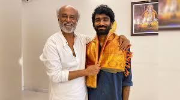

As of now, there is no credible information or official announcement suggesting that Pradeep Ranganathan will become the Chief Minister of Tamil Nadu in 2030. Pradeep Ranganathan is a prominent figure in Tamil cinema, known for his work as an actor, director, and writer. He gained significant recognition with films like Love Today (2022), Dragon (2025), and Dude (2025), all of which were commercial successes. His recent project, Love Insurance Kompany (LIK), is a futuristic romantic comedy set in 2040, showcasing his versatility in storytelling India Tod While Pradeep has made a significant impact in the entertainment industry, there is no indication that he has expressed interest in pursuing a political career or has been involved in any political activities. His recent decision to decline directing a high-profile film featuring Rajinikanth and Kamal Haasan further emphasizes his focus on acting over direction The Times of India . Therefore, any claims or speculations about Pradeep Ranganathan becoming the Chief Minister of Tamil Nadu in 2030 are unfounded and not supported by current information
Current Status
Pradeep Ranganathan is a prominent figure in Tamil cinema, known for his work as an actor, director, and
writer. He gained significant recognition with films like Love Today (2022), Dragon (2025), and Dude
(2025), all of which were commercial successes. His recent project, Love Insurance Kompany (LIK), is a
futuristic romantic comedy set in 2040, showcasing his versatility in storytelling
